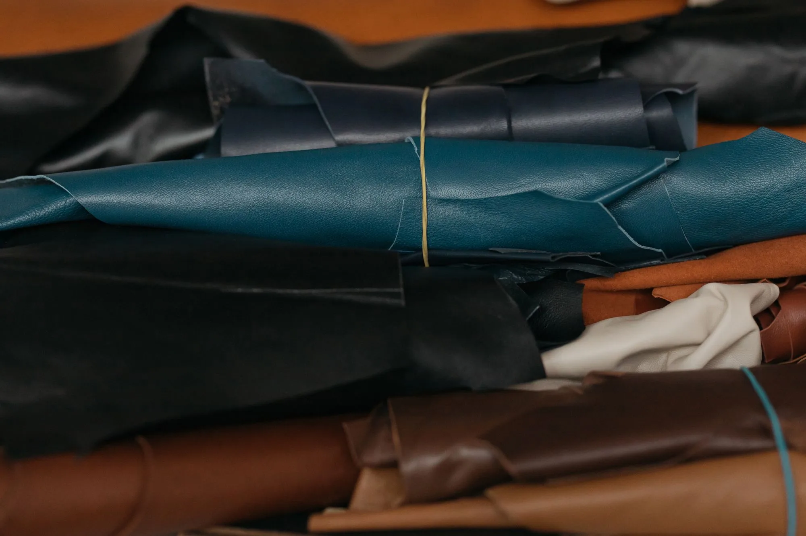
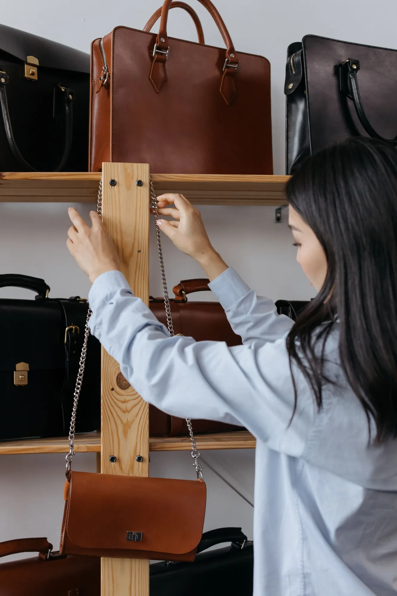
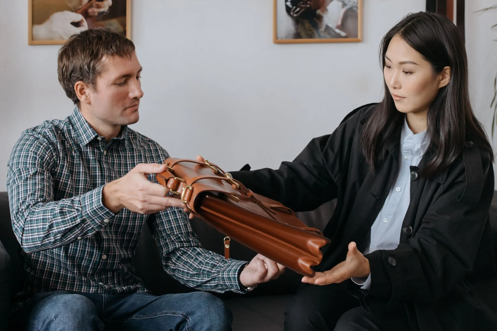
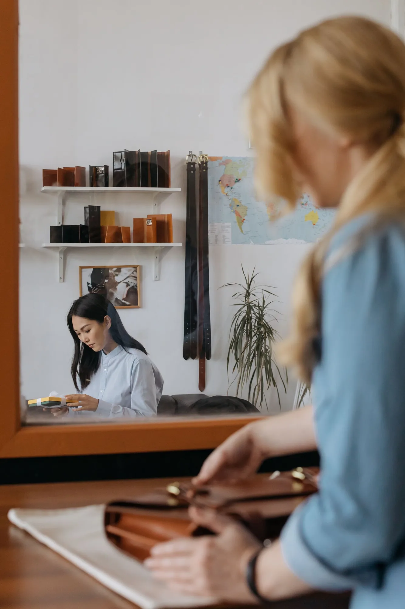
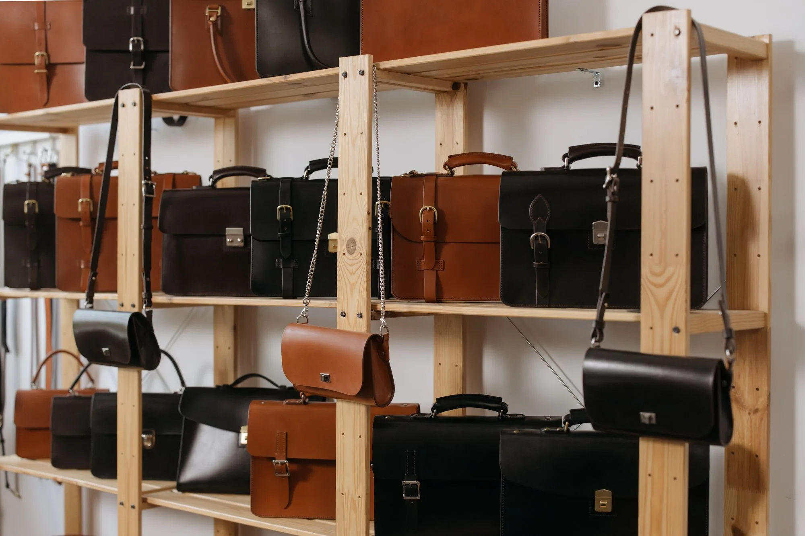

The hide
Full-grain cowhide, vegetable-tanned for six weeks in Kasur. We pick each hide by hand and reject about one in three.
Home / Our craft
Every Chamra briefcase is made start to finish by one craftsman in our Sialkot workshop, and signed inside. Here is what those two days look like.

Full-grain cowhide, vegetable-tanned for six weeks in Kasur. We pick each hide by hand and reject about one in three.
Tan or black. The panels are cut with hand knives from paper patterns, so the grain runs the same way on every bag.

Two needles, one waxed linen thread. A saddle stitch holds even if one stitch breaks, which a machine stitch never does.

Edges are sanded, dyed and burnished by hand, then the brass lock and buckles are riveted on. The maker signs the inside.



We make batches of 10 to 100 briefcases or wallets for companies, with your logo or each person's initials stamped in the leather. Allow three weeks.
Ask for a quote